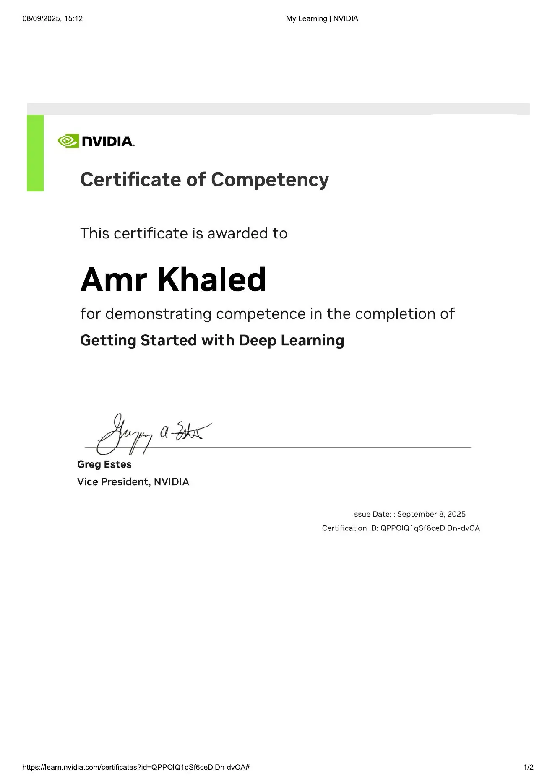
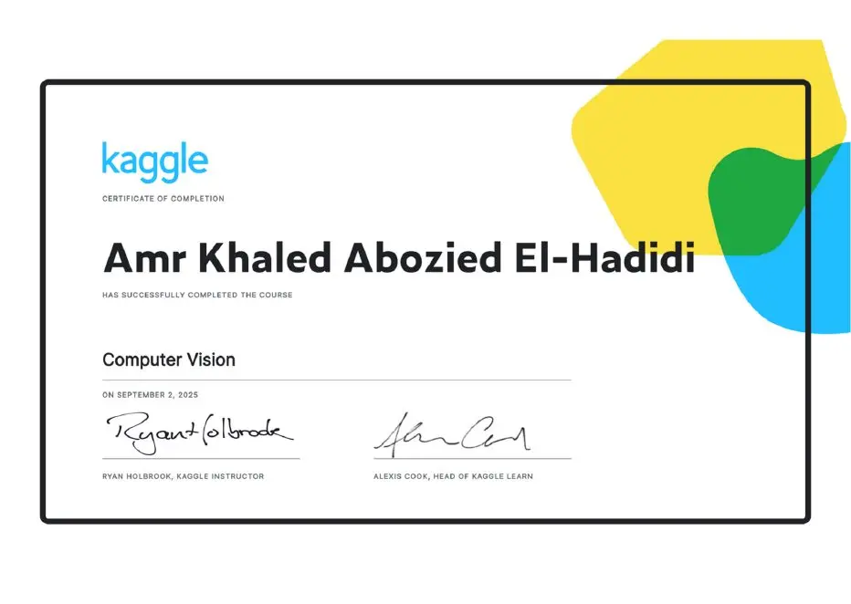

Techno Minds تعلم البرمجة بشكل عملي واحترافي
تعليم Programming وAI لطلاب الثانوية والبكالوريا بأسلوب تطبيقي: الطالب يكتب الكود بنفسه، يشوف الـ Output، ويتابع تقدمه من الحصة للواجب والاختبار.
# Techno Minds Lab
student = "Developer"
print("Learn. Code. Build.")
# Learning Flow
def session():
understand()
practice()
build_project()Programming + AI للثانوية والبكالوريا
محتوى عملي بترتيب واضح: شرح سريع، كود في الحصة، واجب قابل للمتابعة، وتقييم قصير يقيس الفهم.
مسار تعليمي منظم بدون نقص في المحتوى
كل مرحلة مبنية على اللي قبلها: أساسيات، حل مشكلات، Web Basics، AI Concepts، وبعدها Mini Project يثبت إن الطالب فهم وطبق.
ملخص واضح بعد كل حصة
عرض مختصر ومنظم يساعد الطالب وولي الأمر يعرفوا آخر نقطة اتشرحت، المطلوب يتسلم، والتقييم التالي.
خلفية موثقة في AI وCloud وDeep Learning
صور الشهادات معروضة بشكل واضح ومضغوط، وتقدر تضغط على أي شهادة لعرضها بحجم مناسب مع بياناتها بالإنجليزي.

Getting Started with Deep Learning
Certificate of Competency
Issued: September 8, 2025
Computer Vision
Certificate of Completion
Completed: September 2, 2025
Artificial Intelligence & Machine Learning
72 Hours Training Program
15 August 2025 - 16 September 2025
Intro to Deep Learning
Certificate of Completion
Completed: September 2, 2025AWS Academy Graduate - Cloud Foundations
AWS badge - Cloud Computing foundations and AWS core services
Cloud Foundations • AWS Core ServicesAWS Academy Graduate - Machine Learning for Natural Language Processing
AWS badge - NLP and machine learning workflows
Machine Learning • NLP Workflowsكل الأسئلة المهمة موجودة في مساعد الأسئلة
اضغط على أيقونة مساعد الأسئلة أسفل الصفحة وشوف إجابات مختصرة لأهم الأسئلة عن الحضور والمتابعة والواجبات وولي الأمر.
أفضل خمسة طلاب داخل كل مسار
الترتيب يحسب نشاط الشهر الحالي فقط، ولا يعرض هواتف أو بيانات خاصة.
تجارب مختصرة وواضحة
اكتب رأيك في ثواني، وهيظهر هنا بحجم صغير مناسب للعرض.
جاهز تبدأ رحلة البرمجة؟
للاستفسار أو التسجيل، اضغط على زر واتساب أو احجز بيانات الطالب من النموذج.
مكان يتعلم فيه الطالب بعقلية Developer
الهدف إن الطالب يفهم، يكتب، يجرب، ويطلع بمشروع صغير يثبت إنه طبق بنفسه.
افتح العملي